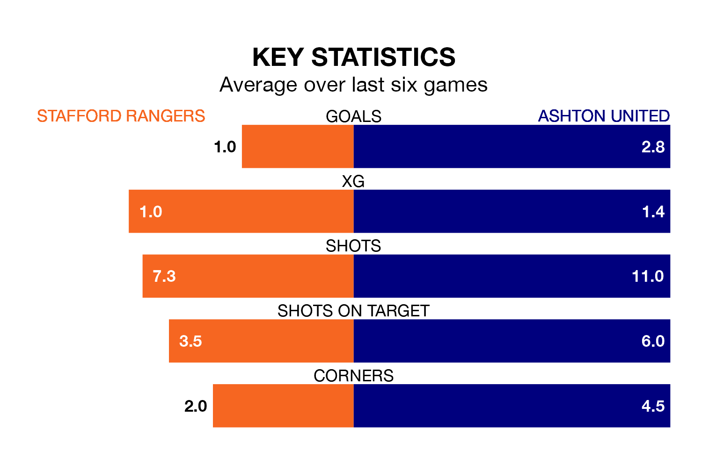

Ashton United come to Marston Road to play Stafford Rangers on Saturday in great form, having collected 15 points from their last six games.
The visitors have won five and lost one of their last six fixtures, while Stafford have three wins and three losses.
With 36 goals in 38 games so far this season, Stafford are the league's second-lowest scorers with 0.9 goals per game. And they are conceding more than average, letting in 73 goals at a rate of 1.9 per game.
Ashton, meanwhile, are above average scorers, with 1.8 goals per game, compared to a league average of 1.6. They have conceded 1.5 goals per game.
In the last 10 years, Stafford and Ashton have played each other on 11 occasions. Stafford won two of them, Ashton six, and they drew three times.
On average, Stafford scored 1.1 goals and Ashton 1.2 in those matches.
Their last meeting was on December 12, when Ashton won 2-1 at home.
Rangers are 19th in the table after 38 games, of which they have won nine and drawn three, earning 30 points.
United are 12 places ahead of the hosts in seventh, with 18 wins and 10 draws putting them on 64 points.
Stafford's last match was on April 13, a 1-0 loss against Atherton Collieries.
Ashton lost 2-1 against Ilkeston Town last time out, also on April 13.
Updated: 11:31 (UTC), 15/04/24